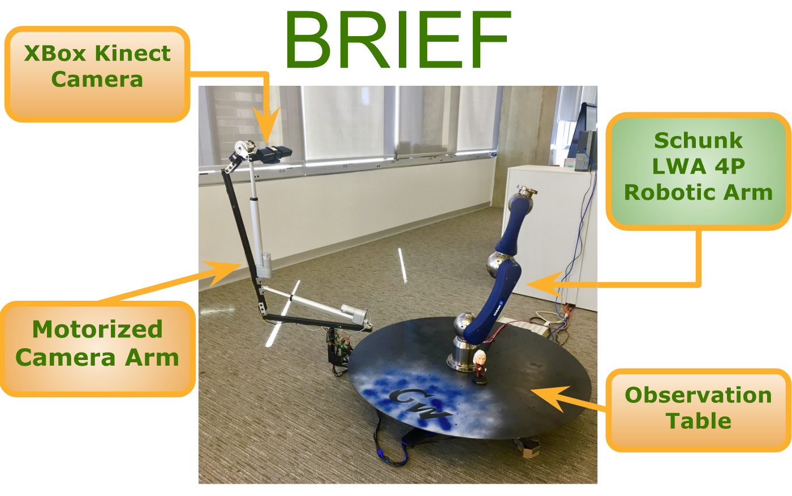

Biological Robotic Imaging Experimentation Framework (BRIEF)

Karl Preisner
BS Computer Science, candidate - Spring 2017
Project Overview:
The overall goal of this project was to create a way for a computer to gather visual information about an unknown object in an open environment so the computer can then use a robotic actuator to interact with the object. I have designed and constructed a 3D scanner that can create a full scan of relatively large object (4' x 4' x 4') at the press of a button. My teammate, Joseph Crandall, worked on controlling the robotic actuator for interacting with the object.
3D Scanner:
My contribution to the project has been designing and constructing a 3D scanner that can create a series of 3D models of an object. BRIEF has four main components. The observation table, the motorized camera arm, the XBox Kinect camera, and the Schunk LWA 4P Robotic Arm. Any object that we want to scan is placed on the observation table. The motorized camera arm can position the Kinect camera to a wide array of angles as well as circumnavigate the perimeter of the table. This allows the Kinect camera to take images from enough angles such that a 3D model can be generated by combining the images.

The two main joints in the camera arm are motorized by heavy-torque linear actuators. The XBox Kinect camera is attached to a powerful servo motor that can tilt the camera up and down. A stepper motor, which is fixed underneath the table, is attached to a timing belt that pulls the camera arm around the perimeter of the table. The main computer sends motor position commands to a Raspberry Pi 3, which in turn, relays the commands to the motors. The stepper motor is connected directly to the Raspberry Pi. The two linear actuators and the servo motor, located are on the camera arm itself, listen to an Arduino Uno, which receives commands from the Raspberry Pi.
All of the image gathering and 3D modeling is done using the Point Cloud Library. First, the camera arm moves to its initial position. Once it is in this position, the camera arm moves slowly around the perimeter of the table while the Kinect camera snaps images at ~30fps. When the scan is completed, all of the captured images can be combined into a 3D point cloud model or a 3D traingular mesh using Kinect Fusion. Once we have a 3D model of our scan, the Schunk Robotic Arm can use the model to interact with the object on the observation table. Additionally, we can use the Point Cloud Library to perform calculations on the 3D model. For example, we scan a plant and find its surface area. If we scan the plant a week later and compare its new surface area to its old one, we can precisely study how the plant grows!
Biography:
Karl Preisner is a senior at The George Washington University. In May 2017 he will graduate with a BS in Computer Science as well as a minor in Trumpet Performance. In the fall of 2017, he will be returning to GWU for a Master's degree in Computer Science. During the summer of 2017, Karl will be an intern for the NSA in their CAE program. Karl has been involved with many groups in the music program at GW and as well as the NIH Philharmonia. For the past four summers, he traveled the country and performed for hundreds of thousands of people with the Carolina Crown Drum and Bugle Corps.
Documentation:
- Final SBIR Grant
- Design Document